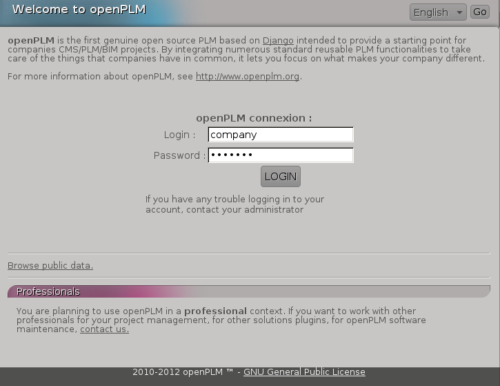

1.2. How to install openPLM server (development version)
This document describes how to install an openPLM server.
Warning
OpenPLM 2.0 (current development version) will no longer be
compatible with django 1.2 and the portage is in in progress.
It is recommended to wait until the migration is done before
installing this version. (2013/02/25)
1.2.1. Requirements
This HowTo is based on:
- Debian Wheezy
- Apache Server version: Apache/2.2.22 (from Debian)
- PostgreSQL 9.1
- Python 2.6.X or 2.7.X
- Django 1.5.X
- Celery 3.0.X
- Haystack 1.2.X
- Xapian 1.2.X
- Lepl 5.0
- South 0.7.6
- Markdown 2.2
It is also valid on Debian Squeeze (Apache 2.2.16, PostgreSQL 8.4).
Note
Django framework can run with SQLite 3 and MySQL databases and with other web servers.
We welcome all feedbacks about these combinations. For more information, you can visit :
Django website
1.2.2. Install necessary packages
First, you must install some dependencies:
- apt-get install swig build-essential pkg-config gettext apache2 libapache2-mod-wsgi python-pip python-dev python-imaging python-kjbuckets python-pypdf ipython graphviz graphviz-dev python-pygraphviz python-xapian rabbitmq-server postgresql libpq-dev python-tz python-pisa libgsf-bin imagemagick python-pisa python-lxml
- pip install odfpy docutils celery django-celery 'django==1.5.2' 'south==0.7.6' psycopg2 'django-haystack<2' librabbitmq markdown lepl
To enable plain text search on files, you need to install the following
dependencies:
- apt-get install poppler-utils html2text odt2txt antiword catdoc
- pip install openxmllib
1.2.3. Get code using Subversion
- apt-get install subversion
- mkdir /var/django
All files used for a new django site will be stored in this directory.
- cd /var/django
- svn co http://svn.openplm.org/svn/openPLM/
The directory ./openPLM is created and all codes are downloaded.
1.2.4. Configure PostgreSQL
mkdir /var/postgres
chown postgres:postgres /var/postgres/
find / -name initdb
/usr/lib/postgresql/8.4/bin/initdb
locale-gen fr_FR.UTF-8
(replace fr_FR.UTF-8 with your locale)
su postgres
/usr/lib/postgresql/8.4/bin/initdb --encoding=UTF-8 --locale=fr_FR.UTF-8 --pgdata=/var/postgres/
/usr/lib/postgresql/8.4/bin/postgres -D /var/postgres &
(it is not a problem if postgres is already running, you do not have to restart it)
psql:
postgres=#create database openplm;
postgres=#create role django with password 'MyPassword' login;
\q
exit
1.2.5. Change the secret key
- cd /var/django/openPLM/trunk/openPLM/
- python bin/change_secret_key.py
1.2.6. Create the database
Edit the file /var/django/openPLM/trunk/openPLM/settings.py
and set the database password (‘MyPassword’)
It must be the one set with the command create role django with password 'MyPassword' login;
Here the DATABASE_USER is django, not the Django admin created by
./manage.py syncdb --all.
For example:
# settings.py
DATABASES = {
'default': {
'ENGINE': 'django.db.backends.postgresql_psycopg2', # or 'postgresql', 'mysql', 'sqlite3', 'oracle'.
'NAME': 'openplm', # Or path to database file if using sqlite3.
'USER': 'django', # Not used with sqlite3.
'PASSWORD': 'MyPassword', # Not used with sqlite3.
'HOST': 'localhost', # Set to empty string for localhost. Not used with sqlite3.
'PORT': '', # Set to empty string for default. Not used with sqlite3.
}
}
Then execute the following commands:
- cd /var/django/openPLM/trunk/openPLM/
- ./manage.py syncdb --all
- ./manage.py migrate --all --fake
- ./manage.py loaddata extra_lifecycles to load optional lifecycles
Note
You have to create the superadmin user for Django and a special user named ‘company’.
The company can access all contents from openPLM and should sponsor other users.
The admin is here to administrate openPLM via its admin interface.
1.2.7. Compile message files
Run the following commands:
- make
- ./bin/translate_all.sh compile all
1.2.9. Collect staticfiles
Run ./manage.py collectstatic.
This will collect static files (javascript, images, css) in
the static/ repertory.
1.2.14. Restart Apache server
- a2ensite openplm
- service apache2 restart
1.2.15. First steps in openPLM
1.2.15.1. Editing the site adress
Edit the default Site (http://server/admin/sites/site/1/) and set the
domain name.
This should be the same domain set in the apache file and in the ALLOWED_HOST setting.
You must login with the admin account.
You can use localhost on a local installation.
1.2.15.2. Adding users
To add users in OpenPLM, you have two methods. The first one uses the
delegation tab directly in OpenPLM and the second one uses the administration
interface.
1.2.15.2.1. Recommanded method
The first method is the recommanded way to add users to an OpenPLM instance.
The only constraint is that you need to have a working email configuration.
You need to log into OpenPLM. If you have just completed the installation, you
can log in using the company user created during installation.
Open your web browser and go to:
http://your_site_address/
Note
Here your_site_adress is given as example but you have to use your own site adress

Then follow the steps described in Add a user (sponsor).
Create other users if needed, then logout and login as your new user account.
1.2.15.2.2. Second method
The second method to add users is not recomanded. Things can go wrong :
permissions problems can occurs, and users might not be indexed.
The only reason to use it is because you don’t need a working email configuration to use it.
But even in that case, it is recommanded to take a few minutes to configure emails and use the sponsoring method.
Open your web browser and go to:
http://your_site_address/admin/
Note
Here your_site_adress is given as example but you have to use your own site adress
Enter superadmin login and password:

If you see an IOError (socket closed), checks your settings, in particular the
stuff related to Celery and RabbitMQ.
You can add new user and edit them going to Home>Auth>User:

Do not forget to edit Home>Plmapp>User profiles in order to give correct rights for openPLM application :

Then you must create a new Site (use the admin interface) and set the SITE_ID
variable in the settings.py file.
You are now ready for your first login:

1.2.16. Requiring HTTPS connections
If your (apache) server support HTTPS, you can force HTTPS connections by setting the
FORCE_HTTPS and SESSION_COOKIE_SECURE to True in the
settings.py file.
Each HTTP connection will be redirected to an HTTPS connection.
A possible apache configuration would be (the rewrite and ssl modules must
be enabled)
NameVirtualHost *:80
<VirtualHost *:80>
WSGIScriptAlias / /var/django/openPLM/trunk/openPLM/apache/django.wsgi
# required to enable webdav access
WSGIPassAuthorization On
<Location "/admin">
RewriteEngine On
RewriteRule (.*) https://%{HTTP_HOST}%{REQUEST_URI} [L,R=301]
</Location>
<Location "/static">
RewriteEngine On
RewriteRule (.*) https://%{HTTP_HOST}%{REQUEST_URI} [L,R=301]
</Location>
<Location "/media">
RewriteEngine On
RewriteRule (.*) https://%{HTTP_HOST}%{REQUEST_URI} [L,R=301]
</Location>
</VirtualHost>
NameVirtualHost *:443
<VirtualHost *:443>
SSLEngine on
SSLCertificateFile /etc/ssl/mycert.crt
SSLCertificateKeyFile /etc/ssl/mykey.key
SSLVerifyClient none
WSGIScriptAlias / /var/django/openPLM/trunk/openPLM/apache/django.wsgi
<Location ~ "/media/(?!public)">
WSGIAccessScript /var/django/openPLM/trunk/openPLM/apache/access_restricted.wsgi
</Location>
Alias /static /var/django/openPLM/trunk/openPLM/static
<Directory /var/django/openPLM/trunk/openPLM/static>
Order deny,allow
Allow from all
</Directory>
Alias /media /var/django/openPLM/trunk/openPLM/media
<Directory /var/django/openPLM/trunk/openPLM/media>
Order deny,allow
Allow from all
</Directory>
</VirtualHost>
1.2.17. Configuring E-mails
There are several variables that can be set in the settings.py to configure
how mails are sent. See the Django documentation for more details.
OpenPLM adds another variable EMAIL_OPENPLM which is the e-mail address set
in the from field of each e-mail. Usually, this is a no-reply@ address.
1.2.18. Turning off the debugging mode
Once your server is configured and runs fine, you should turn off the debug mode.
Set the DEBUG setting to False and restart celery and apache.
1.2.19. Troubleshootings
This error is thrown if Celery is mis-configured and can not connect to
RabbitMQ.
See Configure Celery for more details, make sure that RabbitMQ is running and do
not forget to edit the BROKER_* variables in the settings.py file.
You can rebuild the search index (Configure the search engine) and see if openPLM
finds your parts.
It is possible that celery can not update the
search index. You can check celery’s log (/var/log/celery/*.log) and
see if it contains lines like [.. INFO/MainProcess] Got task from broker: openPLM.plmapp.tasks.update_index[...]. It may be a permission problem and
chown www-data:www-data -R /var/openPLM/xapian_index/ may fix it.
1.2.19.4. I try to connect to http://server/ but I always get an “It works” page
Maybe your apache installation is a little broken. Does http://server/home/
show a more acceptable result?